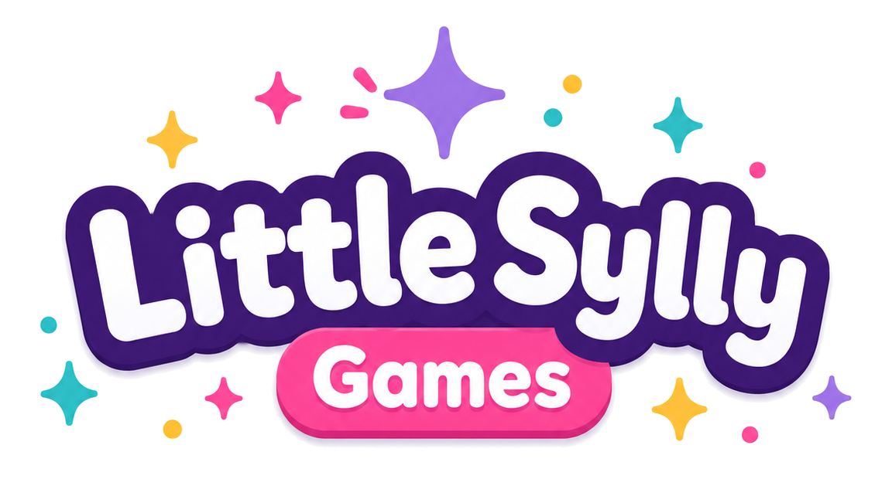

gel-btn lobby-btn),
same Fredoka, same brand colours — generated from games.js rather than hand-copied,
so it can never silently drift from what it's rendering. It is the fourth layout option, not
just a reference. The "Shelves" pane is the redesign — lobby.css + lobby.js,
rationale in DESIGN-NOTES.md. Read docs/lobby-redesign-brief.md first.

What are we playing today?
Release ✨